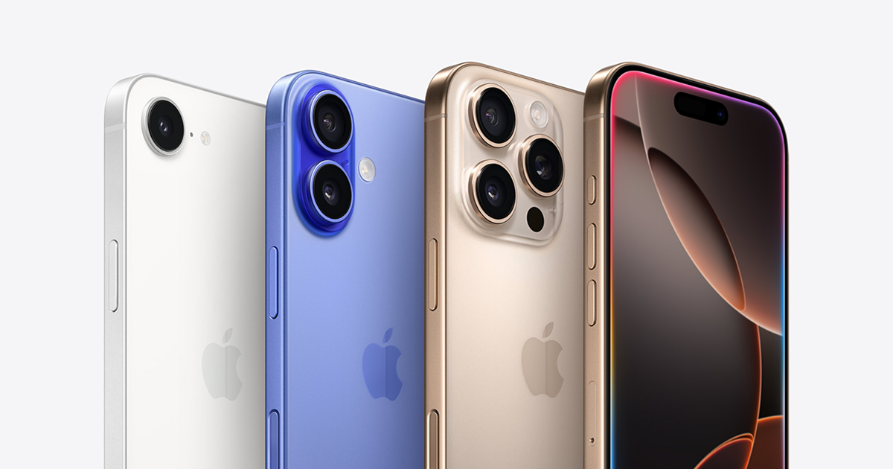

MISIÓN
La misión de Apple es “crear los mejores productos del mundo y enriquecer la vida de las personas”.
Históricamente, Apple ha enfatizado la innovación, el diseño y la facilidad de uso en sus productos. Steve Jobs solía decir que Apple estaba en la intersección de la tecnología y las humanidades, lo que refleja su enfoque en crear experiencias que no solo sean avanzadas, sino también intuitivas y elegantes.
Actualmente, Apple también tiene un fuerte compromiso con la sostenibilidad, la privacidad del usuario y la accesibilidad, lo que se refleja en sus productos y políticas corporativas
